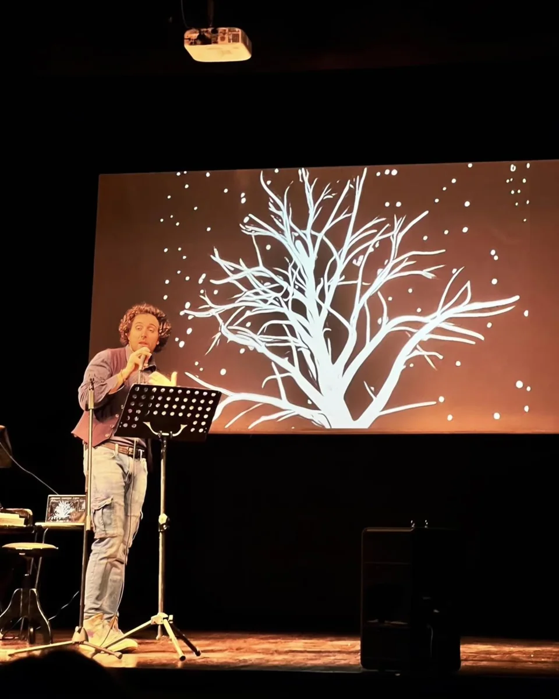
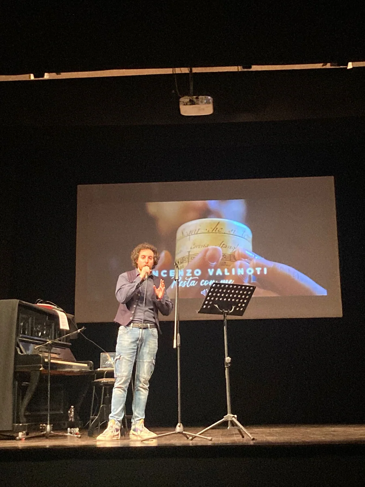
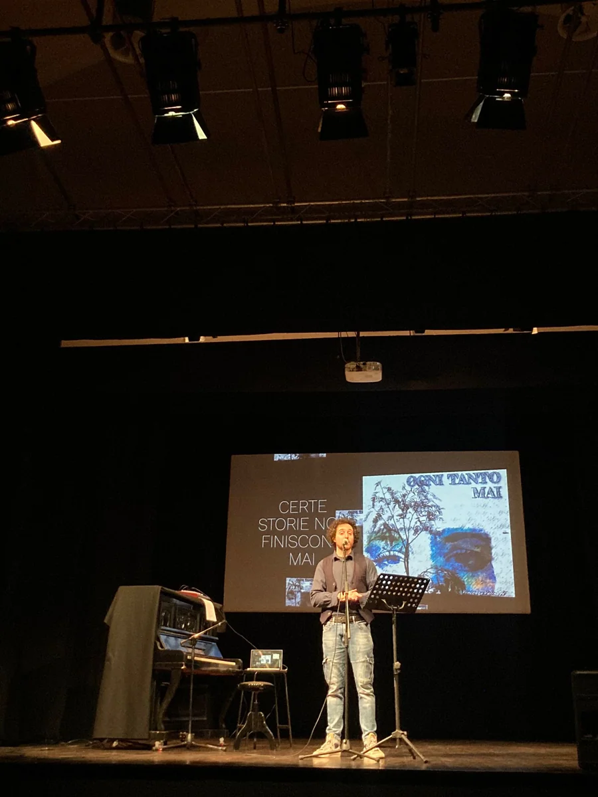

03 — Scena
Resta con me
Cos’è “Resta con me”?
Questo racconto/concerto nasce dalla volontà di descrivere e diffondere la mia visione dell'arte, per comunicare quanto la creatività possa rappresentare un punto di riferimento costante per la vita di una persona.
In parte un concerto, in parte un monologo, "RESTA CON ME" è un messaggio che rammenta l'indissolubile, ma invisibile legame che unisce le persone con un'anima affine, che spesso hanno paura di mostrare la propria emotività e per questo si sentono sole.
Ma più si parla delle possibilità comunicative che ci offrono la pittura, la musica e la poesia, più il concetto di unione si espande, generando un intreccio di legami sempre più fitto, stabile e visibile tra chi ha bisogno sentirsi compreso e chi ha voglia di mettersi in gioco. Lo spettacolo racconta ciò che si cela dietro un gesto creativo e di come si possa tradurre un'esperienza negativa in qualcosa di bello e trasmissibile, che sia d'esempio per qualcuno che voglia fare stesso. Perché ogni esperienza vissuta è nascosta dentro la vita di qualcun altro e condividerle è il solo modo per rendersene conto.
Lo spettacolo è andato in scena a Gennaio del 2024, presso il teatro Affratellamento di Firenze.


